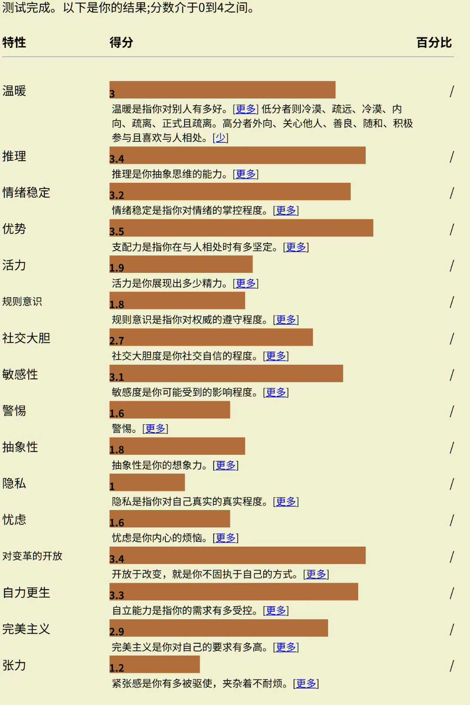
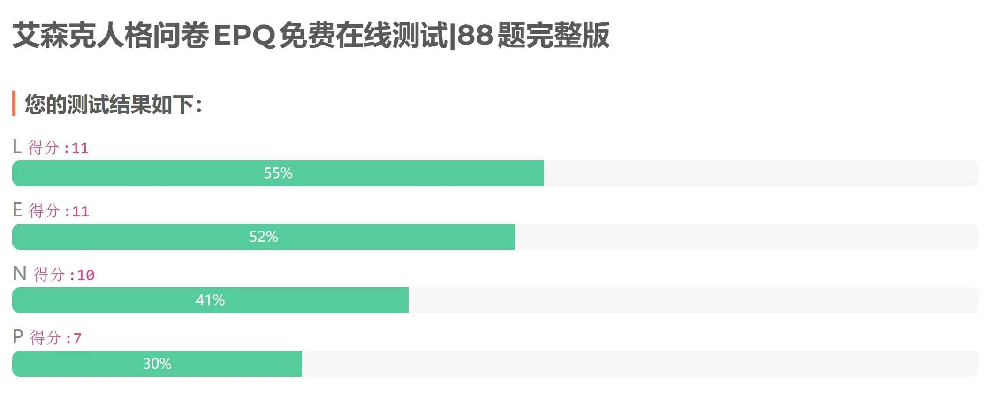
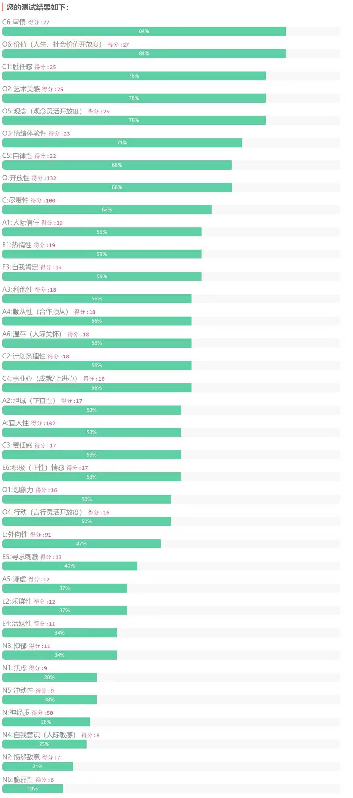

世界是流动的
世界是流动的，来过，走过，没有永恒的停驻，只是一切融入一切的短暂生命。
Gnothi Seauton一场仍在发生的自我探索。
选择一个章节
01 / 05
我是谁，也仍在成为谁。
认识自己，是认识世界的第一步。
在感性与理性间寻求中庸一体之道。
想成为怎样的人：有能力，有自由，有深度，有好奇心，也有生命力。
想过怎样的生活：一种稳定向上的生活。
这不是一个固定的答案，这是一条仍在发生的路。
三份量表，三种视角，让你更全面地认识我。

卡特尔16种人格因素问卷

艾森克人格问卷修订版

大五人格量表修订版
02 / 05
理解世界的几个坐标。
几条理念 · 在这里读完
世界是流动的，来过，走过，没有永恒的停驻，只是一切融入一切的短暂生命。
缓慢而稳定的前进
通过不断实践，认识，再实践，再认识的循环中接近真理。
书海无涯我逍遥游哇哈哈哈
一些展开的话 · 点击标题阅读 ↗
爱的唯一性，就是人的唯一性——扎根于灵魂，沉淀于经历。爱一个人，也是在理解那些使其成为自己的时刻。
美不只存在于令人愉悦的事物之中。世界万象与人的心灵相遇，我们在感知、理解与想象中感受情感、发现价值、赋予意义。
童年的世界很小。家庭、环境与被看待的方式，怎样成为我们面对世界的底色？长大后，我重新回望那个世界。
梦把记忆、情绪与想象编织成另一种叙事。这里记录着18个让我情绪剧烈起伏且深刻的梦，含解析共计七千八百多字，祂引领我弥补不足走向完整。
《对不起》 《原谅》
真正高质量的人生是在有限长度内保持合理密度，让体验、成长、休息形成平衡。
技术能力已经提升，社会应用却还停留在旧阶段。理解技术，也理解真实需求，帮助人们跨越这段距离并创造实际价值，是技术扩散留下的机会。
AI正在扩展人的创造能力，也让人重新思考自己的独特价值。当执行与生成变得更容易，什么问题值得解决、什么东西值得创造，可能成为更重要的判断。
真诚坦荡，靠谱回应。亲近时尊重边界，各自成长，也分享沿途的收获——这是我期待的交友方式。
别再跟着别人的剧本活了。如果人生有一条主线，它是否一定要与别人相同？关于寻找自己的方向，而不是只完成外界交来的答案。
人与人的差距在哪？从这个问题出发，继续追问我们如何理解差距，以及怎样看待自己正在走的路。
我珍惜说到做到的踏实感。计划有变时彼此说一声，比让对方一直猜更让人安心。
遇到麻烦，能一起想办法，也愿意看看自己能承担什么；这样的关系让我觉得我们站在同一边。
情绪不好是难免的。我更愿意在缓过来之后谈具体的事，不让一次争执变成对彼此的伤害。
好的相处不必计较每次付出是否对等，但我希望分享、支持与惦记，是可以双向流动的。
我在意诚实和底线。一起做事时，靠真实的努力获得结果，会让我更愿意信任这段关系。
有分歧时，我愿意听当面的真话，也希望自己能把心里的话认真说出来，少一点猜测。
对世界仍有好奇的人很吸引我。我们可以交换最近读到、学到的东西，不必只聊熟悉的话题。
成长不必同速。我喜欢能各自向前，也偶尔停下来聊聊变化、困惑与新发现的关系。
观点不同也可以聊得很深。我愿意听见另一种解释，而不是把每次讨论都变成输赢。
一件约好的小事有回应，一段暂时忙碌的时间有交代，这些细节会慢慢积累成信任。
亲近不意味着没有边界。我希望彼此都能坦然说“不”，也能拥有独处和自己的生活。
一起接触新想法、尝试不熟悉的事，也容得下一次失败，是我期待的轻松与开放。
我欣赏愿意照顾身体的人。能聊聊作息、运动和精力，也能提醒彼此不必一直透支自己。
各自投入热爱的事情，再带着收获回来分享；能专注，也能相聚，是我喜欢的相处节奏。
如果承诺反复落空，又始终没有解释或改变，我会慢慢收回自己的信任。
遇事总把责任推给别人，会让我很难继续一起做事。我需要的是共同面对，而不是互相消耗。
持续的辱骂、冷暴力或情绪攻击，会让我选择离开。亲近不该成为伤害的理由。
一段长期只有一方索取、另一方付出的关系，会让我疲惫，也不再愿意靠近。
欺骗、作弊或利用朋友触碰了我的底线。我不愿用亲近替这些行为开脱。
比起背后的挑拨，我更愿意面对直接的分歧。若坦诚沟通始终不可能，我会保留距离。
为什么有的人对爱忠贞不渝，甚至殉情，而有的人肆意滥交，却从未爱过。为什么明明爱令人那么痛苦，人们却对它趋之若鹜？
历经无数年的生存和繁衍，利于生存的基因被保留，不利于生存的基因载体死亡，不断演化，最终在大约400万年前，浪漫爱情的神经元第一次在人科祖先中出现。在那时，爱的职能为提高繁殖成功率、为后代提供稳定的养育环境、促进合作和群体凝聚力、提高生存适应性。若仅仅是如此，爱又如何影响现代人的生活形成丰富多彩的形态？
在与爱人相处时，大脑中富含多巴胺的区域会激活，这一区域与快乐、一般唤醒、专注注意力和追求获得奖赏的动机相关。催产素和血管加压素升高，降低焦虑、增强信任、抑制背叛、增强亲密接触。
当人们被爱人看见、尊重、偏爱、接纳时，多巴胺、催产素、血管加压素等物质都会促使人们产生快乐、温暖、心安、甜蜜的感觉，这些感觉又会促使人们采取看见他人、尊重他人、偏爱他人、接纳他人的行为，形成正向反馈，循环往复，爱就出现了并在彼此间流动。
因此我们可以爱任何人，也可以被任何人所爱。那么我们是如何选择爱人的？我们又为什么反复爱上同一类人？
依恋是具有生存价值的本能行为系统，旨在保护幼体免受威胁。照顾者在幼体采取不同的养育策略会使其形成不同的依恋类型：安全型、回避型和焦虑－矛盾型。安全型依恋的成人在爱情中表现出信任、稳定和积极的期待；回避型依恋的成人倾向于保持情感距离，对亲密关系感到不适；焦虑-矛盾型依恋的成人则表现出对关系的过度关注和不安全感。
比外貌优先的情感互动。抚养者是人生第一个爱的样本，我们会天然亲近于外貌、性格、神态、语气、动作、对待方式与抚养者相似的人。在后续不断喜欢上其他人的过程中，样本不断更新，某些特质的神经区域被增强，并在见到某些特定的人时，这块神经区域会激活，并连锁激活与爱相关的模块，于是一见钟情，或是日久生情。
爱的反义词不是恨，而是痛。个体会天然贪恋熟悉与安全的环境与体验，当被看见、被重视、被偏爱、被接纳成为习惯，大脑会将这段关系默认为"安全区"，当关系结束时，个体仍会本能地想待在原地，无法跳出固有的情感模式。
人们畏惧亲人的死亡，亦是如此。死亡对于活在世界上的人来说，是少了一个爱他的人，少了一个看见、照顾、理解、接纳他的人。我们恐惧的不是死亡，而是不被爱，爱得越深执念越深。
执念是今天新引入的概念，并无多少研究与思考。它是人的一部分，也是爱的一部分，它无处不在。
执念很深的人，也是坚持不懈，坚韧不拔的人。苏轼说"古之立大事者，不惟有超世之才，亦必有坚忍不拔之志。"世间大部分人都没有，亦是普通人。纯粹的理性思考而不考虑情感的因素是不可取的，希望通过此篇文章，让你认识爱之实，在理性与情感中、痛苦与爱中寻得一条中庸之道，而不被执念所困。
形而上之美，被理性解构成形而下具象逻辑，那份诗意就此消散。
人可以轻易喜欢任何人，不过是分泌激素本能；也能爱众生万物，只需拥有足够的慈悲。
爱的唯一性，就是人的唯一性——扎根于灵魂，沉淀于经历。
人真的无可替代吗？形而下看：基因有双胞胎复刻，容貌有路人撞脸相似，学识、能力、财富等外在特质，皆可被他人比肩甚至替代。
唯独灵魂不可复刻。形而上往下看：自生命降生伊始，每一分每一秒都无限动态演化，你每次抉择、每番思考、每段亲身亲历，所有独属于你的生命轨迹交织累积，无人能够复制，最终塑成了独一无二的你🫵
人们如何爱唯一的人，在ta有缺时如同亲人父母般不离不弃，而非移情别恋，想必就是爱构成ta过往的独特经历，以及爱曾经或未来和ta一起创造的独特经历罢。
小时候我不懂这句话，因为我是站在被审视的那一端。高中时只觉得是无稽之谈——人的一生明明有无数变量，怎么可能凭幼年的模样，就定了终身的走向。
这句俗语的核心，从来不是预判孩子的先天素质与人生上限，而是揭示了一个朴素本质：孩子的一言一行、心性底色，就是他所处的家庭、养育环境等所有社会关系共同作用的结果。正应了马克思那句经典之言：人是一切社会关系的总和。孩子的模样，正是他所处的一切社会关系的综合缩影。（基因决定论的迷信已经是上一个世纪的产物了，当被扫进历史的尘埃）
今天在外吃饭，亲戚小孩千姿百态，我观察思考，突然回想我小时候，总有一些大人，会带着与我如今一模一样的特殊目光看向你，那目光的名字叫审视——审视你值不值得他倾注自己的思想与教育，审视这份心思花在你身上，能否有预期的成效，而非白费。
可那时的我于他们而言，终究是个外人。外人能做的事太少，有时忍不住多说两句，有时又恨铁不成钢，最后只能劝自己别多管闲事，干脆抽离出来，如今我也成为了这个外人。
站在审视的另一端才明白，这种审视，无关性别、年龄、学历，更不是长辈居高临下的评判特权，它的本质，是对儿童人格发展、行为背后的心理、家庭与环境乃至社会的塑造、人与人交往边界的基础认知，是对内的不被孩子情绪影响的定力、是对外穿透表象看见孩子需求的共情能力、以及不妄加评判的中立觉察能力。
透过孩子的行为，往往能窥见其背后的情绪逻辑，支撑这份情绪的固有行为模式，还有以家庭教育为核心的成长环境，为他塑造的处世底层机制。这套机制会在幼年时期打下深刻的人生底色，成为他面对世界时最本能的下意识反应，影响贯穿成长全程，后续想要重塑调整，绝非易事。
也正应了"江山易改，本性难移"的老话。这套处世机制的深度重塑，本质上是对自身固有认知与本能反应的彻底改写，这个过程需要消耗极大的心力，辅以长期坚定的行动，才有可能真正达成。
《对不起》
对不起啊。
我伤害了你，
对不起。
第一次来这人间，
第一次学着做人，
却伤害了你。
对不起啊。
我伤害过的人，
对不起啊。
《原谅》
我原谅了。
你带给我的伤害，
我已经原谅了。
你也是啊，
第一次来到这世界上，
懵懵懂懂地，
第一次学着做人。
你带给我的伤害，
我原谅了。
以前，我认为美是天地广阔、壮丽山河，是妖娆身段、倾城容颜。美似乎总与那些令人赏心悦目的事物联系在一起。直到我玩了《光与影：33号远征队》。开场时，人们在死亡中化作花瓣，随风飘散。一代又一代的人踏上远征，试图拯救他们的世界。生命在消逝，希望却仍在延续。那一刻，我感受到一种难以言说的美。死亡是残酷的，花瓣是美丽的；远征伴随着绝望，却又孕育着希望。画面、音乐与故事交织在一起，悲伤与震撼同时涌上心头。
我开始意识到，美或许不只是那些令人愉悦的事物。悲剧可以是美的，死亡可以呈现出美，甚至痛苦与绝望之中，也可能诞生震撼人心的美。于是，我认为：“美，就是那些能够引起我情绪剧烈波动的事物。“但愤怒、恐惧、厌恶，同样能够引起剧烈的情绪波动。目睹残忍的伤害，我们也会感到震撼，那显然不是美。
在漫长的演化过程中，人类祖先生活于自然之中。开阔的原野、充足的水源、繁茂的植被，可能意味着更好的生存机会。那些有利于生存与繁衍的环境特征，或许逐渐影响了人类的审美偏好。而人类又是群居的动物。合作、互助、照料同伴，提高了群体生存的可能性。我们会因他人的善举而感动，因残忍的伤害而愤怒，这些情绪也有着深刻的演化与社会根源。
山川自有其形，星辰自有其轨。它们不因人的赞美而存在，却因人的感知与理解，被赋予了各自不同的意义。同一轮明月，有人望见团圆，有人望见离别；同一场落雪，有人感受宁静，有人想起故人。美可以存在于眼前，也可以存在于脑海。即使是一颗从未抵达的星球，一段从未发生的故事一个只存在于想象中的世界，也足以让人心生向往。事物的存在不依赖我们的目光，而美的体验可以在感知、理解与想象中诞生。每个人都带着自己的经历、情感与记忆去认识世界，也因此拥有属于自己的美。
美是世界万象与人的心灵相遇，是我们在万物之中感受到的情感、发现的价值与赋予的意义。
一项新技术出现，并不会立刻创造财富。从实验室里的技术，到改变社会生产方式，中间存在一个过程。技术首先被少部分人掌握：研究人员、开发者、领先企业。他们知道这个技术可以做什么。但大多数人仍然按照过去的方式工作。于是产生了一种落差：技术能力已经提升，但社会应用还停留在旧阶段，使用旧的生产方式。这个落差，就是机会。
历史上很多机会，本质都是技术扩散。互联网出现后，信息传播成本大幅降低。
互联网降低了信息传播和交易成本，催生了电商等新的商业模式。但这些商业模式的出现，不代表所有人都能立即利用它们。例如，一家传统商店想开展线上业务，却不知道如何搭建网店、获取客户、管理订单。于是，掌握互联网技术和运营方法的人，可以帮助商家解决这些问题，并从中获得收入。云计算也是如此。企业可以通过云服务降低购买和维护服务器的成本，但仍然需要有人帮助它们完成系统迁移、部署和维护。人工智能同样存在这样的机会。今天，大模型已经具备很强的能力，但许多企业仍然不知道如何将AI应用于实际业务。如果有人能够帮助企业利用AI降低成本、提高效率，企业就有理由为这项服务付费。技术已经能够解决问题，但需要它的人还不会使用。帮助他们跨越这段距离，并创造实际价值，就是技术扩散落差带来的财富机会。
OpenAI 联合创始人、前特斯拉 AI 总监 Andrej Karpathy在 2026 年 10 月 11 日于 X 翻出一条旧推文：人们对LLM能力的共同认知差距正在扩大。约60亿人没接触过LLM，十到二十亿人偶尔使用免费版的AI产品，类似搜索引擎与写作辅助工具，约两千万人使用前言模型花费几周或几个月去完成大小项目，最后是约五千名可以在内部使用前沿系统的人。对于普通人来说，最大的机会未必是成为技术创造者。更多时候，是成为技术和传统世界之间的连接者。因为新技术的发展，总需要有人完成：技术 → 产品；技术 → 行业应用；技术 → 普通人的实际需求很多行业并不是没有技术，而是不知道如何使用技术。能够理解技术，又理解真实需求的人，会成为重要角色。
寻找过去昂贵但正在变便宜的东西；未来因为变化而重新稀缺的东西；以及连接两者之间的机会。技术扩散的落差，就是时代变化留下的窗口。
每一次技术革命，本质上都是人类能力边界的一次扩展。蒸汽机扩大了人的体力，计算机扩大了人的计算能力，互联网扩大了人的信息获取能力。而人工智能正在扩展创造能力。但技术本身不会自动改变所有人的命运。同一个时代，不同的人面对同一种技术，会走向完全不同的方向。在我看来，AI时代的人大致可以分为三类。
他们站在技术革命的源头。他们研究算法，制造芯片，建设算力基础设施，训练大型模型。他们创造的是新的生产工具。就像工业革命时期发明和改进蒸汽机的人，互联网时代创造网络基础设施的人，他们改变的是整个社会的生产方式。这一类人的数量注定很少，因为他们需要极高的技术积累和资源支持。但他们决定了时代向哪里发展。
这是目前大多数人的位置。他们拥有AI，并利用AI提高自己的效率。他们使用AI写文章、生成图片、辅助编程、整理信息。每一次技术革命，大多数人最初都是工具使用者。如果只是把AI当成一个效率工具，那么本质上仍然是在旧时代的规则里竞争。过去，人们竞争的是：谁记得更多知识；谁掌握更多技能；谁完成任务更快。而AI正在快速削弱这些优势。因为大量标准化的知识处理和执行工作，都可以被机器完成。所以未来真正的差距，可能不再是“谁会使用工具”，而是“谁知道应该创造什么”。
他们不是简单地使用AI，而是与AI共同创造。他们拥有一种更重要的能力：元创造力。过去，人需要学习如何完成任务。未来，人更需要知道：什么问题值得解决？什么东西值得创造？什么方向值得投入？AI可以生成无数答案，但它无法替代人的价值判断。它可以告诉你如何制作一个游戏，却无法决定这个游戏为什么存在。它可以生成无数图片，却无法决定哪一张真正触动人。它可以写出大量文字，却无法决定什么思想值得传播。未来稀缺的，可能不是生产内容的能力，而是发现价值的能力。
人工智能的发展，并不是简单地让机器取代人。更准确地说，是重新划分人与机器的边界。机器越来越擅长：计算；执行；生成；优化。而人应该越来越重视：观察世界；理解自己；发现问题；创造意义。过去，人努力成为一台更优秀的机器。学习更多知识，提高效率，减少错误。但AI出现后，人可能需要重新寻找自己的独特价值。因为机器可以模拟能力，却很难替代一个真实的人对于世界的感受、经历和判断。
未来不会只属于最懂技术的人，也不会只属于最会使用工具的人。真正拥有优势的人，可能是那些能够连接技术与现实世界的人。他们理解技术的发展，也理解人的需求。他们能够发现别人没有看到的问题，并利用AI把想法变成现实。人必须重新思考：什么才是真正属于人的能力。
03 / 05
想法落在日常的地方。
在身体、认知与创造之间，过一种稳定向上的生活。
运动、亲近自然，也认真休息。让身体始终有承载生活的力量。
阅读、观察、思考，也不断内省。持续认识自己，也认识世界。
用写作、视频、访谈和个人项目，把想法带入现实，在反馈中继续生长。
从 2023 到 2026，10 个关于阅读、生活、关系与自我认识的片段。点击查看全文与图片。
04 / 05
认识自己，也包括看见那些尚未改变的部分。
认识自己，也包括看见那些尚未改变的部分。
我习惯先把问题想清楚，却有时让思考代替了行动，错过在实践中获得答案的机会。
我很难满足于“足够好”，常在细节上投入过多，使完成一件事比原本更加困难。
我能在目标明确时投入很多，却还没有形成稳定、可持续的行动节奏。强烈推进之后，有时会转向逃避与停滞。
05 / 05 · 01
书籍凝结着人类文明的智慧，每一次将书中的道理付诸实践，都让我受益匪浅。 RPG 游戏让我成为另一段人生的主角，亲历平凡的日常，也走过跌宕起伏的旅程。 观影时，我喜欢独自一人，让情绪随着故事自然流淌。
有字之书
点选作品，查看相关记录。
仅表示当下最喜欢的，不代表过去和未来。
先收下这些读过的书，读后感慢慢补充。
没有找到匹配的记录，换个关键词或分类试试。
05 / 05 · 02
每个人的记忆与经历里，都藏着一本独一无二的无字之书。那些看似平凡的相遇、选择、挣扎与成长，塑造了今天的我们。愿我们放慢脚步，翻开彼此的人生——你来讲述，我来倾听。
只是很多时候，我们活得太匆忙。
忙着赶路，忙着成为别人期待的样子，却渐渐忘记了——自己曾经历过多少值得珍藏的瞬间。
你是否还记得？
第一次离开熟悉地方时的勇气，某个人曾给予你的温暖，某一次失败后的重新站起，某个深夜里，只有自己知道的坚持。
那些看似普通的片段，其实早已悄悄改变了你。
我们总觉得，精彩的人生属于少数人。
但当我们真正回望，会发现每个人的人生，都有属于自己的高光与转折。
只是这本书没有文字。
它藏在你的记忆里，藏在你的经历里，藏在那些只有你知道的瞬间里。
而这样的书，还有千千万万本。
我们每天与无数人擦肩而过，却很少真正走进彼此的人生。
每个人都曾拥有热烈的青春、难忘的相遇，也曾在命运的路口做出自己的选择。
如果有机会，我想听听你人生中的某一页。
你曾看过怎样的风景，遇见过怎样的人，又是怎样一路走来，成为今天的自己。
你来讲述，我来倾听。
让那些没有文字的故事，在一次相遇中，被重新翻开。
用20个问题，开启一场真诚的对话。